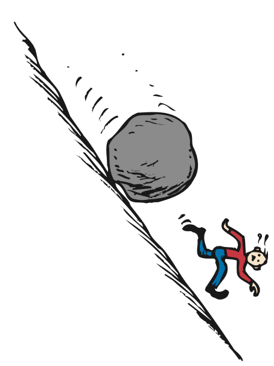
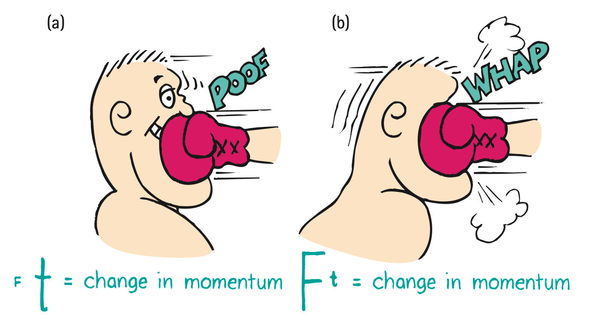

Momentum
Derek Muller found his way into physics teaching through his three passions: understanding the world, helping others, and making films. In his childhood, he was obsessed with practical applications of natural phenomena. Instead of playing with toys, he planted gardens with edible plants, farmed silk worms for their precious cocoons, and learned to make pottery to use when eating his crops. He was intrigued with science, which seemed like magic to him.
Derek’s earliest inspiration for teaching came from his two older sisters, who taught him skills and an appreciation for careful teaching. Later, throughout middle school and high school, he took on the role of a teacher, passing on his science knowledge to friends and peers. In tutoring he experienced the satisfaction of teaching a concept well and cherishing the feeling of being useful. His path then led him to physics education.
After earning his undergraduate degree in Engineering Physics at Queens University in Kingston, Canada, Derek moved to Australia, where he earned a Ph.D. in Physics Education Research at the University of Sydney. As part of his doctoral research he studied the effectiveness of online science videos. He found, to his surprise, that most novice students learned no physics whatsoever from video lessons on physics (as a disclaimer, my Conceptual Physics videos were not part of his study). Derek identified what he saw as the root cause of the problem—student misconceptions of elementary physics. And he found that the problem went well beyond physics. Combating science misunderstandings by the general public became Derek’s calling.
To surmount common misunderstandings and to clear a path for learning, Derek created a channel on YouTube called Veritasium. On this channel he posts science videos, particularly on physics, in which he engages the general public in spirited discussions. In the videos Derek points out inconsistencies with the goal of eliciting “aha moments” of understanding. Using this approach, Derek has created over 130 videos, which have been seen more than 17 million times. Worldwide, Derek’s channel is ranked in the top 1000, with more than 300,000 subscribers (as this goes to press).
At this present time of transition in teaching methods, the physics community has a great pioneer in Derek Muller, who has truly found an effective way to bring an appreciation and understanding of physics to a global audience.
6.1 Momentum
We all know that a heavy truck is harder to stop than a small car moving at the same speed. We state this fact by saying that the truck has more momentum than the car. And if two cars have the same mass, the faster one is harder to stop than the slower one. So we also say that the faster-moving car has more momentum than the slower one. By momentum we mean inertia in motion. More specifically, momentum is defined as the product of the mass of an object and its velocity:
Momentum = mass × velocity
Or, in shorthand notation,
Momentum = mv
When direction is not an important factor, we can say
Momentum = mass × speed
which we still abbreviate mv.
We can see from the definition that a moving object can have a large momentum if either its mass or its velocity is large or if both its mass and its velocity are large. The truck has more momentum than the car moving at the same speed because the truck has a greater mass. We can see that a huge ship moving at a low speed can have a large momentum, as can a small bullet moving at a high speed.

Figure 6.2 was omitted because no matching captured image was supplied.
And, of course, a huge object moving at a high speed, such as a massive truck rolling down a steep hill with no brakes, has a huge momentum, whereas the same truck at rest has no momentum at all—because the v term in mv is zero.
Impulse
Impulse
If the momentum of an object changes, then either the mass or the velocity or both change. If the mass remains unchanged, as is most often the case, then the velocity changes and acceleration occurs. What produces acceleration? We know the answer is force. The greater the net force acting on an object, the greater its change in velocity in a given time interval and, hence, the greater its change in momentum.
But something else is important in changing momentum: time—how long a time the force acts. If you apply a brief force to a stalled automobile, you produce a change in its momentum. Apply the same force over an extended period of time, and you produce a greater change in the automobile’s momentum. A force sustained for a long time produces more change in momentum than does the same force applied briefly. So, both force and time interval are important in changing momentum.
The quantity force × time interval is called impulse. In shorthand notation,
Impulse = Ft

Impulse Changes Momentum
Impulse Changes Momentum
The greater the impulse exerted on something, the greater will be its change in momentum. The exact relationship is
Impulse = change in momentum
We can express all terms in this relationship in shorthand notation using the delta symbol Δ (a Greek letter often used to denote “change in” or “difference in”):1
Ft = Δ(mv)
The impulse–momentum relationship helps us to analyze many examples in which forces act and motion changes. Sometimes the impulse can be considered to be the cause of a change of momentum. Sometimes a change of momentum can be considered to be the cause of an impulse. It doesn’t matter which way you think about it. The important thing is that impulse and change of momentum are always linked. Here we will consider some ordinary examples in which impulse is related to (1) increasing momentum, (2) decreasing momentum over a long time, and (3) decreasing momentum over a short time.
Case 1: Increasing Momentum
To increase the momentum of an object, it makes sense to apply the greatest force possible for as long as possible. A golfer teeing off and a baseball player trying for a home run do both of these things when they swing as hard as possible and follow through with their swings. Following through extends the time of contact.
The forces involved in impulses usually vary from instant to instant. For example, a golf club that strikes a ball exerts zero force on the ball until contact occurs; then the force increases rapidly as the ball is distorted (Figure 6.4). The force then diminishes as the ball comes up to speed and returns to its original shape. So, when we speak of such forces in this chapter, we mean the average force.
Figure 6.4 was omitted because no matching captured image was supplied. Caption: The force of impact on a golf ball varies throughout the duration of impact.
Case 2: Decreasing Momentum Over a Long Time
If you were in a car that was out of control and you had to choose between hitting a concrete wall or a haystack, you wouldn’t have to call on your knowledge of physics to make up your mind. Common sense tells you to choose the haystack. But, knowing the physics helps you to understand why hitting a soft object is entirely different from hitting a hard one. In the case of hitting either the wall or the haystack, your momentum is brought to zero by the same impulse. The same impulse does not mean the same amount of force or the same amount of time; rather, it means the same product of force and time. By hitting the haystack instead of the wall, you extend the time during which your momentum is brought to zero. A longer time interval reduces the force and decreases the resulting deceleration. For example, if the time interval is extended 100 times, the force is reduced to a hundredth. Whenever we wish the force to be small, we extend the time of contact—hence, the padded dashboards and airbags that save lives in motor vehicles.


When you jump from an elevated position down to the ground, what happens if you keep your legs straight and stiff? Ouch! Instead, you bend your knees when your feet make contact with the ground. By doing so you extend the time during which your momentum decreases by 10 to 20 times that of a stiff-legged, abrupt landing. The resulting force on your bones is reduced by 10 to 20 times. A wrestler thrown to the floor tries to extend his time of impact with the mat by relaxing his muscles and spreading the impact into a series of smaller ones as his foot, knee, hip, ribs, and shoulder successively hit the mat. Of course, falling on a mat is preferable to falling on a solid floor because the mat extends the stopping time and so lessens the stopping force.
The safety net used by circus acrobats is a good example of how to achieve the impulse needed for a safe landing. The safety net reduces the stopping force on a fallen acrobat by substantially increasing the stopping time. If you’re about to catch a fast baseball with your bare hand, you extend your hand forward so you’ll have plenty of room for it to move backward after making contact with the ball. When you extend the time of contact, you reduce the force of the catch. Similarly, a boxer rides or rolls with the punch to reduce the force of contact (Figure 6.8).
Figure 6.7 was omitted because no matching captured image was supplied. Caption: A large change in momentum over a long time requires a safely small average force.

Case 3: Decreasing Momentum Over a Short Time
When boxing, if you move into a punch instead of away, you’re in trouble because contact time is reduced so force is increased. Likewise if you catch a high-speed baseball while your hand moves toward the ball instead of away upon contact. Or, when your car is out of control, if you drive it into a concrete wall instead of a haystack, you’re really in trouble. In these cases of short contact times, the contact forces are large. Remember that, for an object brought to rest, the impulse is the same no matter how it is stopped. But, if the time is short, the force will be large.
The idea of a short time of contact explains how a karate expert can split a stack of bricks with the blow of her bare hand (Figure 6.9). She brings her arm and hand swiftly against the bricks with considerable momentum. This momentum is quickly reduced when she delivers an impulse to the bricks. The impulse is the force of her hand against the bricks multiplied by the time during which her hand makes contact with the bricks. By swift execution, she makes the time of contact very brief and correspondingly makes the force of impact huge. If her hand is made to bounce upon impact, the force is even greater.
Figure 6.9 was omitted because no matching captured image was supplied. Caption: Cassy imparts a large impulse to the bricks in a short time and produces a considerable force.
Textbook Sections: 6.1–6.3
Learning Target: Students will explain momentum as mass in motion and use impulse to describe how forces change momentum.
- I can define momentum as a quantity that depends on mass and velocity.
- I can explain why a large mass, high speed, or both can produce large momentum.
- I can explain impulse as force acting over a time interval.
- I can connect impulse to change in momentum.
- I can explain why increasing contact time can reduce force during a collision.